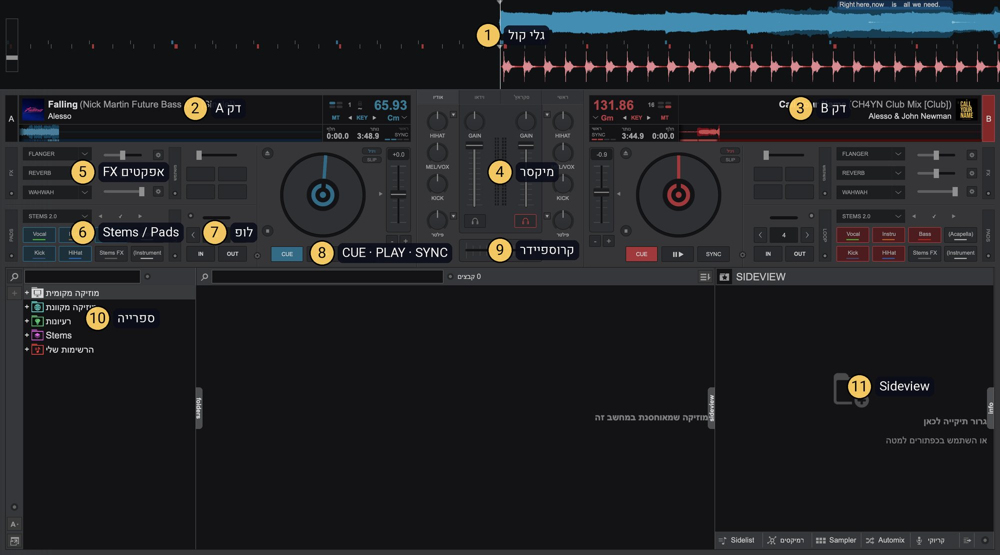
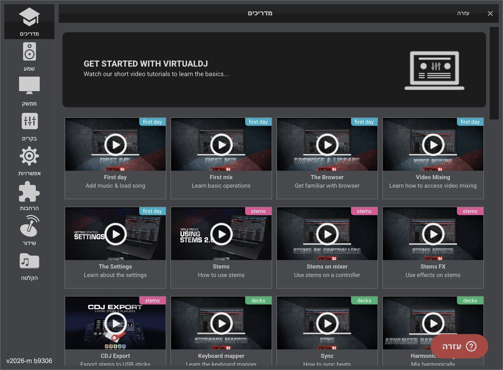
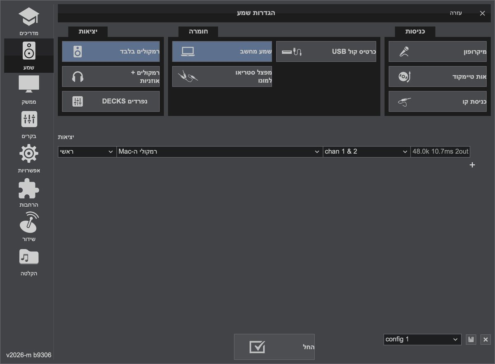
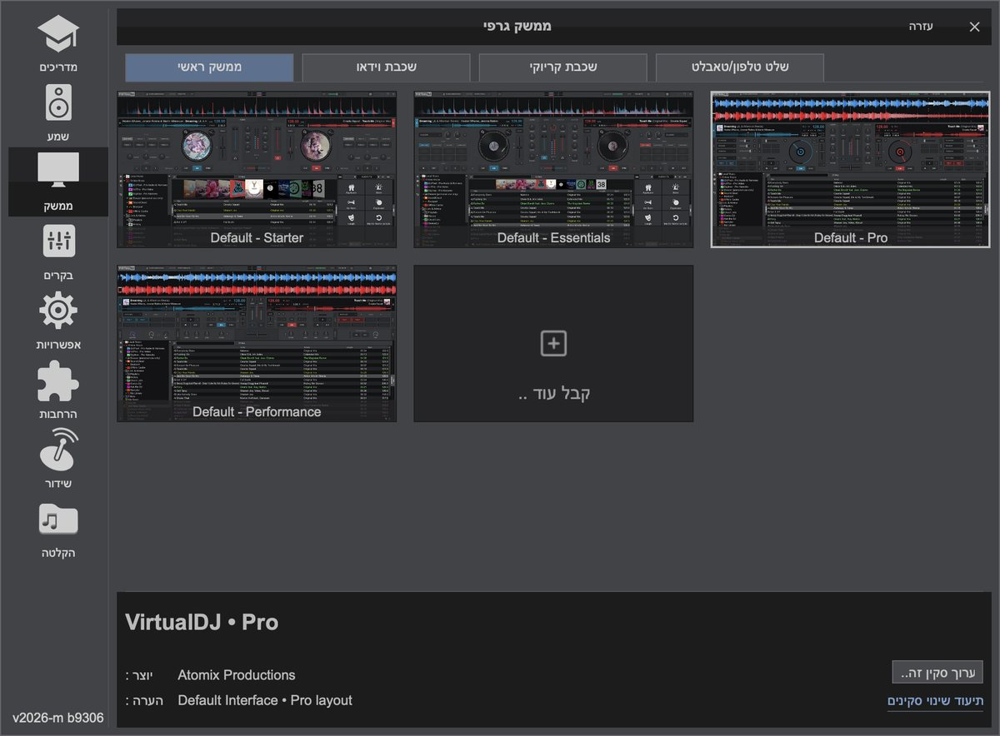
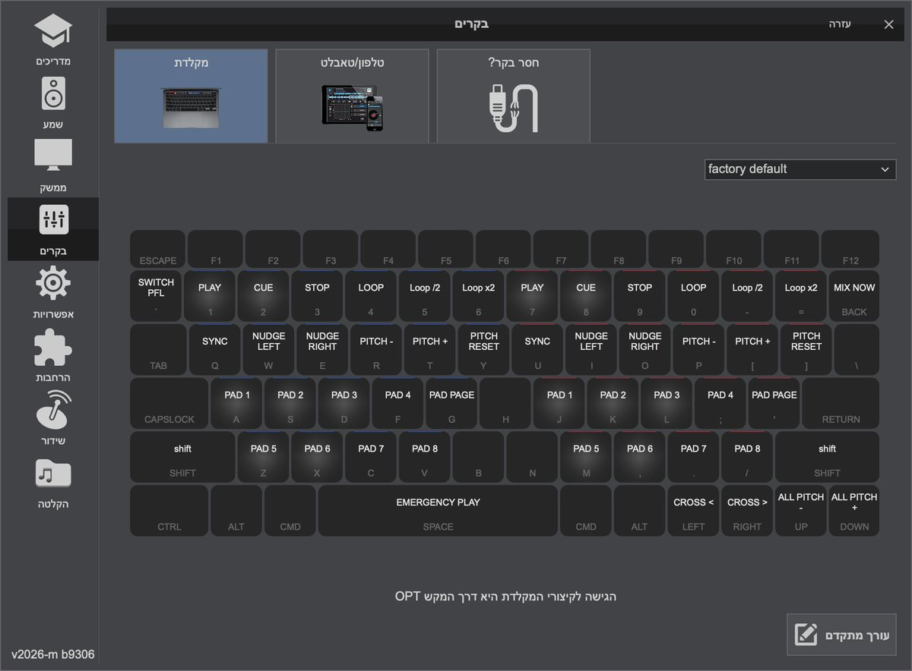
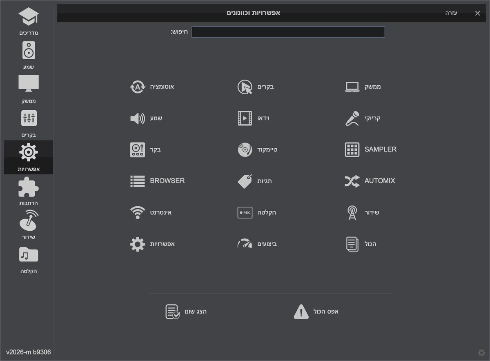
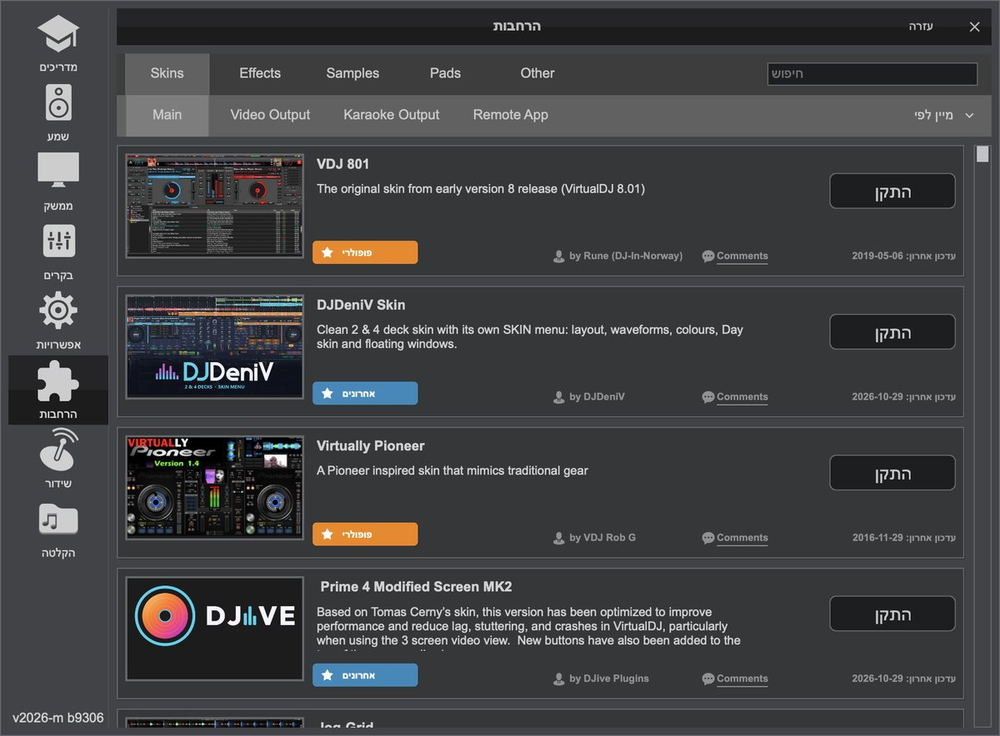
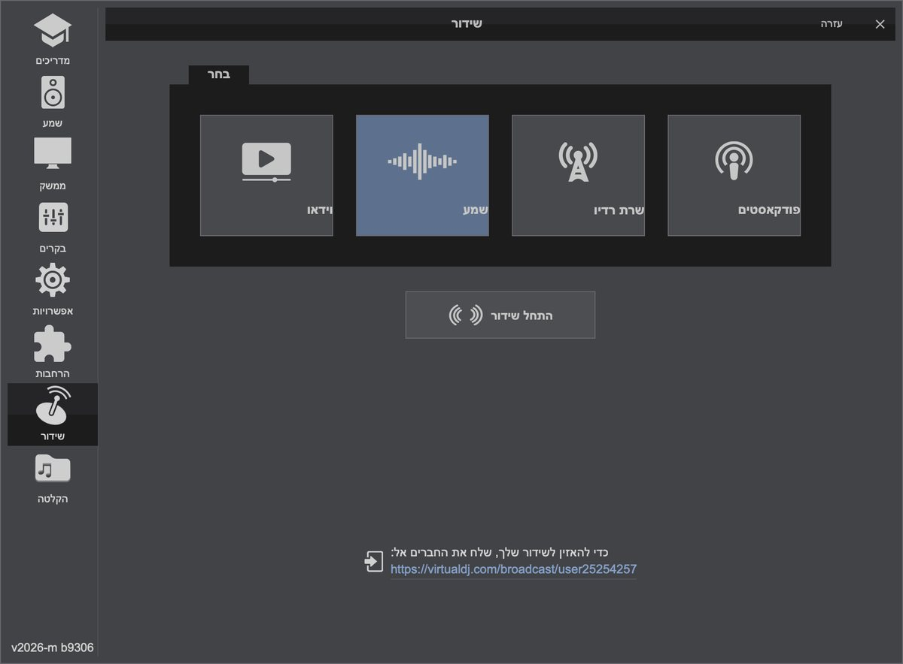
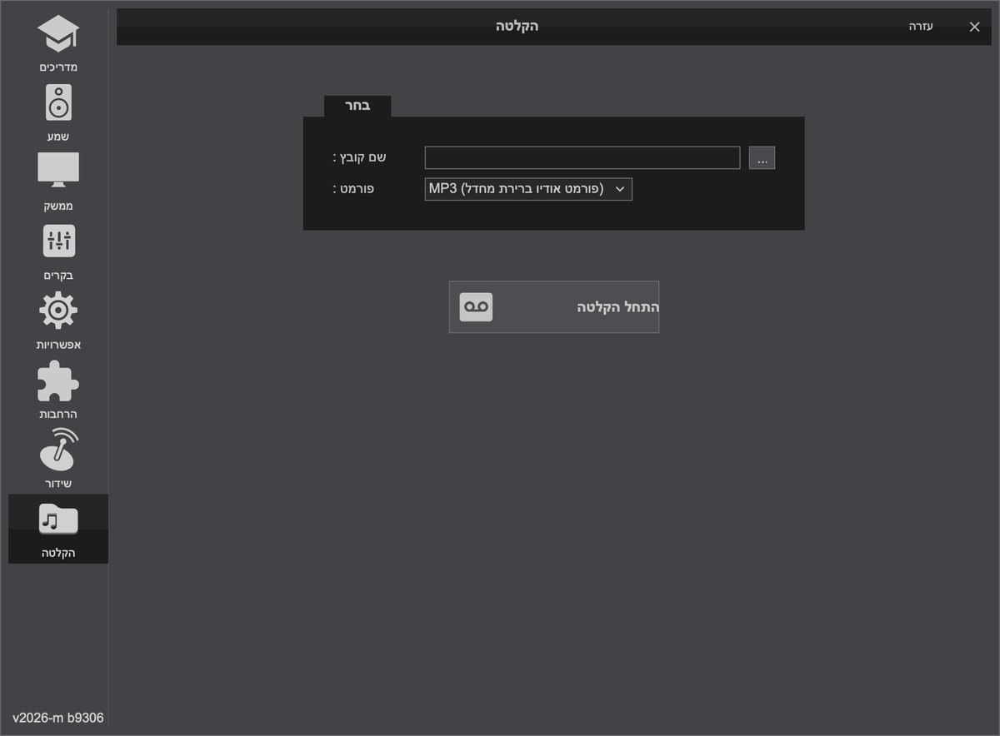

ב-Mac אפשר להוריד את VirtualDJ מהאתר הרשמי virtualdj.com או מה-App Store. הגרסה חינמית לשימוש ביתי (לא מקצועי). אצלך היא כבר מותקנת, והממשק בעברית בזכות קובץ התרגום שהתקנו.
מפה אינטראקטיבית · המסך שלך
VirtualDJ 2026 שלך: רחף או הקש על מספר

בחר אזור
כל מספר הוא חלק אמיתי במסך שלך (גרסה 2026, build 9306, ממשק בעברית).

מה רואים במסך?
- גלי הקול (Waveform) בחלק העליון: הצורה של השירים שמתנגנים. הגבעות הגבוהות הן הביטים.
- דק A משמאל ודק B מימין: כל אחד עם Play, Cue, Sync, תצוגת BPM ו-Pitch.
- המיקסר באמצע: פיידרי ווליום, כפתורי EQ וקרוספיידר בתחתית.
- הספרייה (Browser) בחצי התחתון: תיקיות משמאל ורשימת שירים.
אצלך המיקסר מסומן HIHAT, MEL/VOX ו-KICK במקום High/Mid/Low: אלו אותם שלושה פסים, מבוססי Stems. אצלך פעילה פריסת Default - Pro (ראה לשונית "ממשק" בהגדרות). יש גם Starter, Essentials ו-Performance.
ההגדרות שלך
חלון ההגדרות (גלגל השיניים ⚙ בראש המסך)








צילומי מסך מהגרסה שלך (v2026-m b9306). הלשוניות בצד שמאל של החלון בתוכנה.
💡 הגדרות התוכנה נמצאות בגלגל השיניים (Settings) בראש המסך.